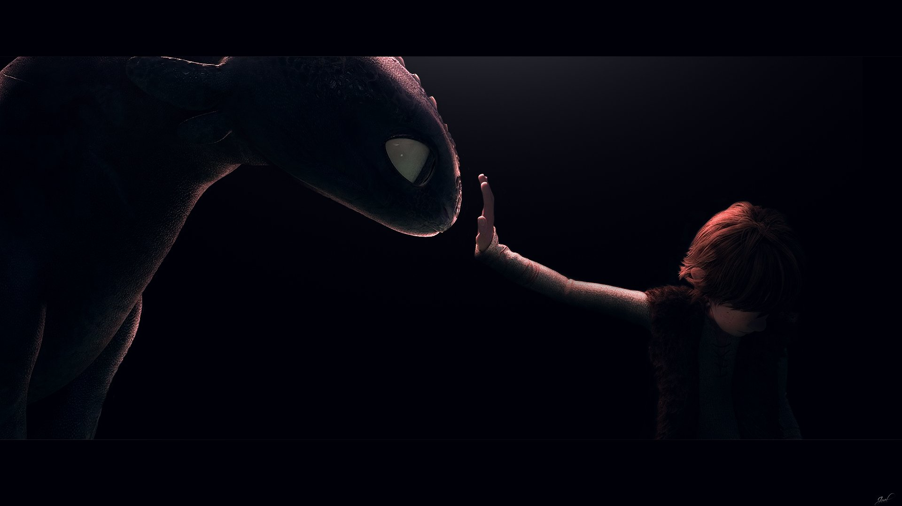
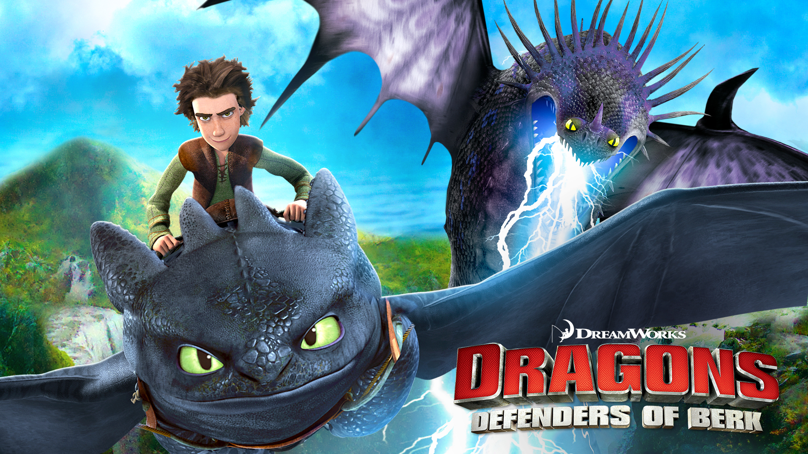
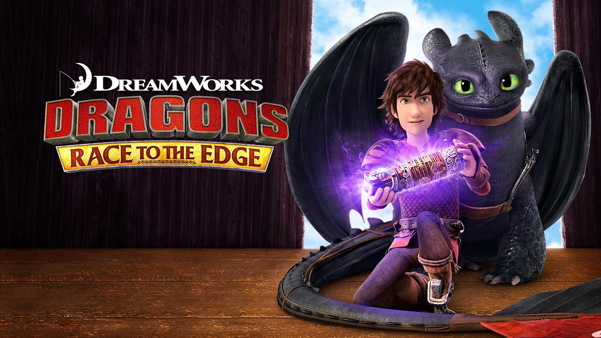
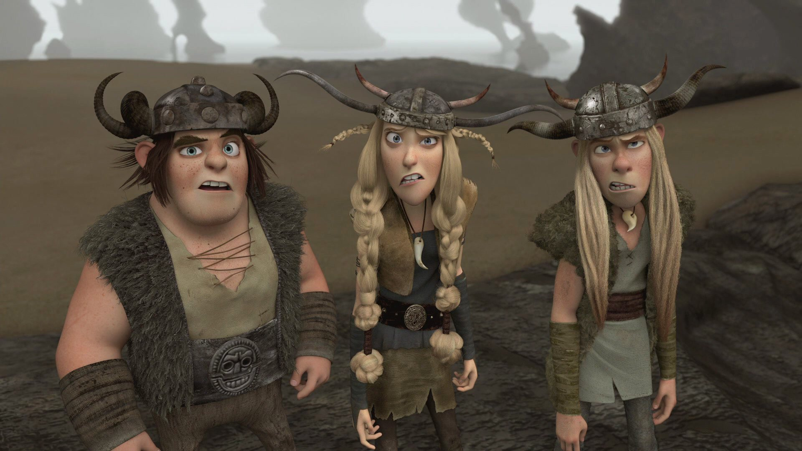
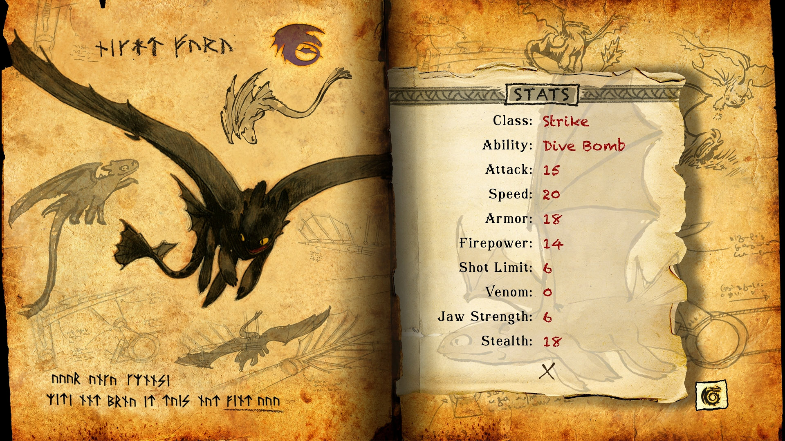
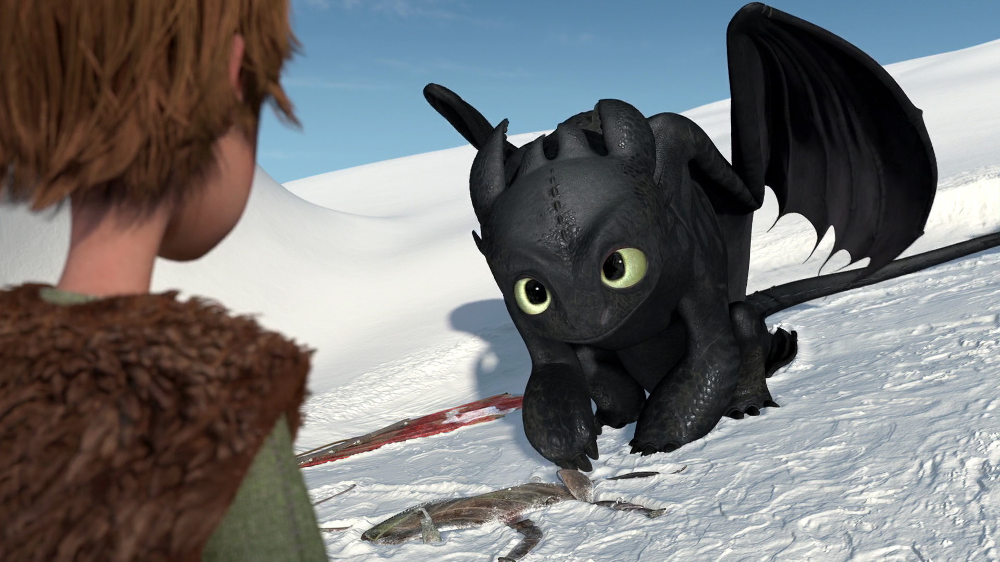
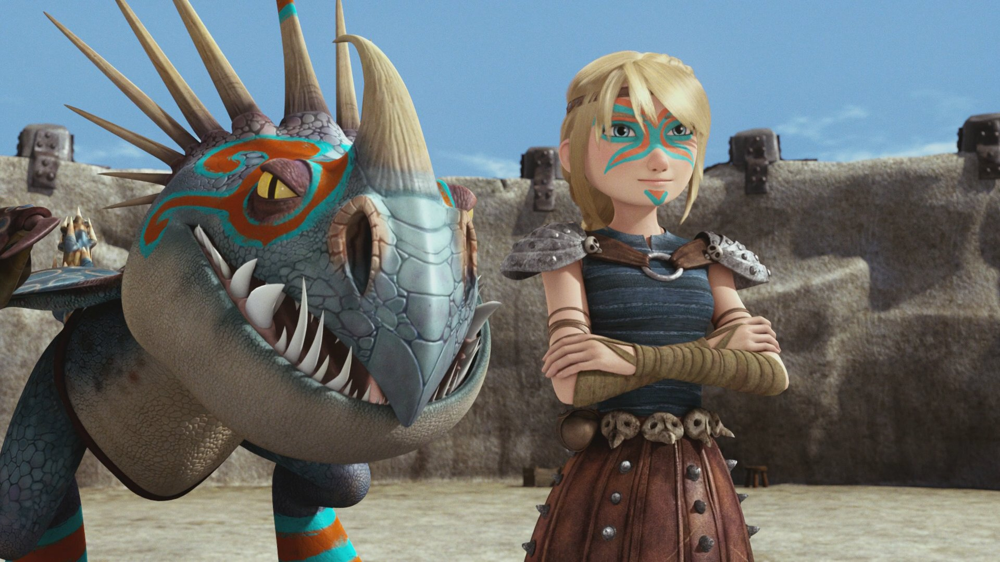
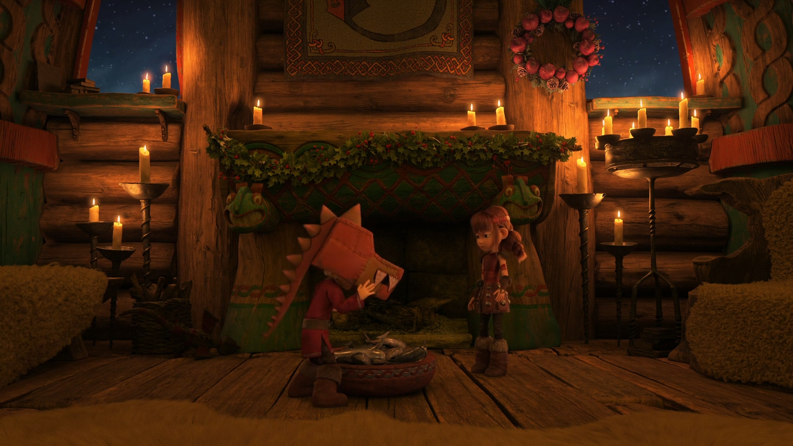

MOVIE • 2010
How to Train Your Dragon
The adventure that started everything. Join Hiccup as he befriends Toothless and changes Berk forever.
Watch →
"This is Berk."
Explore every film, television series, short film and holiday special from the
How to Train Your Dragon universe. Everything on this page has been organised
to make following Hiccup and Toothless' journey as simple as possible.
Welcome to the Dragon Archives. This collection brings together every feature film, television series, short film and holiday special set within the How to Train Your Dragon universe. Whether you're revisiting Berk or experiencing the adventure for the first time, every title has been carefully organised to create one complete viewing experience.
Unlike most collections, this archive follows the story chronologically rather than by release date. Movies, television series and specials have been placed exactly where they fit within the timeline so you can experience Hiccup's story from beginning to end without wondering what comes next.
The adventure that started everything. Join Hiccup as he befriends Toothless and changes Berk forever.
Watch →Five years later, Hiccup discovers a hidden dragon sanctuary and a truth that changes his life forever.
Watch →The final chapter of Hiccup and Toothless' journey as a new world is discovered beyond the horizon.
Watch →Continue Hiccup's early adventures as Berk learns to live alongside dragons following the events of the first film.
Browse →
The Dragon Riders face new enemies, new dragons and even greater challenges while protecting Berk.
Browse →
Follow Hiccup and the riders as they discover the Edge, hunt for Dragon Eyes, and prepare for the events of the second movie.
Browse →

Discover the dragons of Berk through Fishlegs' famous Dragon Manual.
Watch →
A touching Winter holiday adventure explaining the origins of Snoggletog traditions.
Watch →
Learn how the exciting sport of Dragon Racing first began on Berk.
Watch →Years after The Hidden World, a new generation discovers the story of dragons.
Watch →